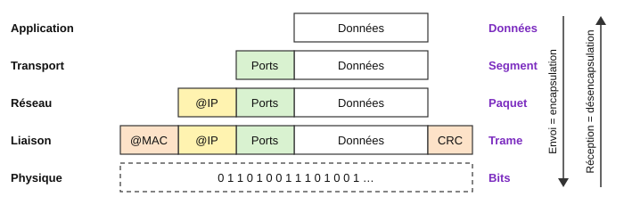
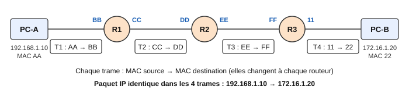
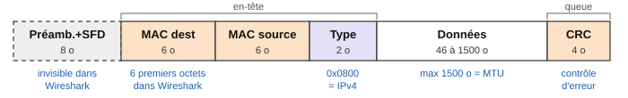

LE JEUNE Louis — UID : ____________
Réseaux Informatiques 1 — Chapitre 2 : Modèles des réseaux, couches physique et liaison — 07/10/2026
Encapsulation. Encapsuler, c'est placer un message dans un autre format, comme une lettre que l'on met dans une enveloppe. Pour envoyer un message, il faut 4 adresses. Dans la lettre, « Bonjour Florian » correspond à l'@IP de destination et la signature « Youssef » à l'@IP source : ce sont les adresses logiques, placées dans le paquet. Sur l'enveloppe, on écrit l'@MAC de destination et l'@MAC source : ce sont les adresses physiques, placées dans la trame. Un message peut être envoyé à une seule machine (unicast), à un groupe (multicast) ou à tout le monde (broadcast).
Modèles en couches ★. On découpe la communication en couches pour qu'une modification reste locale à sa couche, et pour que tous les constructeurs puissent communiquer entre eux (interopérabilité). Le modèle OSI est théorique, le modèle TCP/IP est celui utilisé en pratique. Les numéros de couche n'existent que dans l'OSI.
| N° | OSI | TCP/IP | PDU |
|---|---|---|---|
| 7-6-5 | Application, Présentation, Session | Application | Données |
| 4 | Transport | Transport | Segment |
| 3 | Réseau | Réseau | Paquet |
| 2 | Liaison de données | Liaison | Trame |
| 1 | Physique | Physique | Bits |

À l'envoi, chaque couche ajoute son en-tête ; à la réception, on les retire (désencapsulation).
Rôle des couches. La couche physique transporte des bits d'un point A à un point B sans comprendre leur contenu. La couche liaison transmet les trames d'un saut au saut suivant sur le lien local grâce aux @MAC (pour nous, un saut est un routeur). La couche réseau transmet les paquets de bout en bout, de la source originale à la destination finale, grâce aux @IP, et s'occupe du routage. La couche transport identifie les différents flux grâce aux numéros de port, indépendamment de l'IP et de la MAC : c'est ce qui permet d'avoir YouTube et Netflix ouverts en même temps. On y trouve UDP pour la rapidité (jeux, live) et TCP pour la fiabilité (mails). La couche session identifie l'utilisateur sans dépendre des adresses (on reste connecté à Instagram). La présentation gère le formatage, la compression et le chiffrement, et l'application sert d'interface avec l'utilisateur.
Le hub travaille sur la couche 1. Le switch travaille sur la couche 2 : il ne lit que les MAC et fait de la commutation intra-réseau. Le routeur travaille sur la couche 3 : il lit les MAC et les IP, et fait du routage inter-réseau.
Combien de trames ? ★ exam. 3 routeurs séparent PC-A et PC-B : il y a donc 4 réseaux et il faut 4 trames. Les @MAC changent à chaque routeur, pas les IP.

La bande passante est la capacité maximale théorique, comme le nombre de voies d'une autoroute. Le débit est ce qui passe réellement, il est toujours inférieur à la bande passante. Le débit applicatif correspond au débit sans la signalisation, et la latence est le temps mis par les données pour aller de A à B.
La paire torsadée (RJ-45, 100 m maximum) est torsadée pour réduire la diaphonie, c'est-à-dire un fil qui « entend » son voisin. L'UTP n'est pas blindé (c'est celui du TP), alors que le STP l'est. La fibre transporte de la lumière : elle est insensible aux interférences et va plus loin, mais elle coûte plus cher.
Câbles ★ TP. On utilise un câble droit entre deux équipements différents (PC–switch, switch–routeur) et un câble croisé entre deux équipements identiques, ainsi qu'entre un PC et un routeur. Le câble rollover sert à se brancher sur le port console. Les routeurs du TP n'ont pas d'auto-MDIX, il faut donc choisir le bon câble.
Pour le contrôle d'erreur, le récepteur recalcule le CRC de la trame : s'il est différent de celui reçu, la trame est rejetée puis retransmise. Le contrôle de flux consiste à adapter son débit à la capacité de la destination et à la congestion du réseau.
Trame Ethernet ★. La MTU (Maximum Transmission Unit) est de 1500 octets de données.

L'@MAC fait 48 bits, soit 12 chiffres hexadécimaux. Elle est unique pour chaque interface : les 3 premiers octets identifient le fabricant et les 3 derniers sont uniques. Elle évite que tout le monde traite toutes les trames, comme avec un hub.
La MAC de destination dépend du mode d'envoi : FF-FF-FF-FF-FF-FF pour un broadcast et 00-00-00-00-00-00 quand elle est inconnue. En unicast, c'est la MAC du destinataire s'il est sur le même réseau, sinon celle de la passerelle.
Réception ★ : le PC lit d'abord la MAC de destination. Si c'est la sienne ou un broadcast, il accepte la trame et la désencapsule, sinon il la rejette.
Le switch possède une table MAC qui associe chaque @MAC à un port. Elle est vide à l'allumage et se remplit grâce à deux phases :
Exercice : quand A envoie à B puis que B répond, S1 apprend A (Fa0/1) et B (Fa0/3), mais S2 n'apprend que A (Fa0/1), car la réponse ne passe pas par lui.